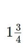
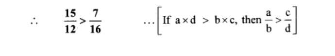

1. Rational and Irrational numbers
Let's recall
We are familiar with Natural numbers, Whole numbers, Integers and Rational numbers.
Rational numbers :
The numbers of the form m n are called rational numbers. Here, m and n are integers but n is not zero. We have also seen that there are infinite rational numbers between any two rational numbers.
To show rational number on line
Let us see how to show 7/3,2,-2/3 on a number line.
Let us draw a number line.
We can show the number 2 on a number line.
,therefore each unit on the right side of zero is to be divided in three
equal parts.The seventh point from zero shows  , hence
the point at 1/3
rd distance of unit after 2 shows 7/3
.
, hence
the point at 1/3
rd distance of unit after 2 shows 7/3
.
To show −2/3 on the number line, first we show 2/3 on it. The number to the left of 0 at the same distance will show the number −2/3 .
Pracice Set 1.1
Question 1.
Show the following numbers on a number line. Draw a separate number line for each example.
i. 3/2, 5/2, -3/2
ii. 5/2, -2/5, -4/5
iii. -5/8, 11/8
iv. 13/10, -17/10
Solution
i. 3/2 , 5/2, -3/2
Here, the denominator of each fraction is 2.
∴ Each unit will be divided into 2 equal parts.
ii. 7/5, -2/5 ,-4/5
Here, the denominator of each fraction is .
∴ Each unit will be divided into 5 equal parts.
ii. -5/8, 11/8
Here, the denominator of each fraction is 8.
∴ Each unit will be divided into 8 equal parts.
ii. 13/10, -17/10
Here, the denominator of each fraction is 10.
∴ Each unit will be divided into 10 equal parts.
Question 2.
Observe the number line and answer the questions.
i. Which number is indicated by point B?
ii. Which point indicates the number  ?
iii. State whether the statement, ‘the point D denotes the number 5/2 is true or false.
Solution:
Here, each emit is divided into 4 equal parts.
i. Point B is marked on the 10th equal part on the left side of O.
∴ The number indicated by point B is −10/4.
ii.
Point C is marked on the 7th equal part on the right side of O.
∴ The number indicated by point C.
iii. True
Point D is marked on the 10th equal part on the right side of O.
∴ D denotes the number
Pracice Set 1.2
1.Compare the following numbers
Solution
1) 7,-2
If a and b are positive numbers such that a < b, then -a> -b.
Since, 2 < 7
∴ -2 > -7
2) 0 , -9/5
On number line , -9/5 is to the left of zero.
∴ 0 > -9/5
3) 8/7 , 0
On a number line,zero is to the left of 8/7.
∴ 8/7>0
4) -5/4 , 1/4
We know that, a negative number is always less than a positive number.
∴ -5/4 < 1/4
5) 40/29 , 141/29
Here, the denominators of the given numbers are the same.
Since, 40 < 141
∴ 40/29 < 141/29
6) -17/20 , -13/20
Here, the denominators of the given numbers are the same.
Since, 17 < 13
∴ -17 < -13
∴ -17/20 < -13/20
7)
Here, the denominators of the given numbers are not the same.
LCM of 12 and 16 = 48
Alternate method:
15 x 16 = 240
12 x 17 = 84
since, 240 > 84
∴ 15 × 16 > 12 × 7

8)
Here, the denominators of the given numbers are not the same.
LCM of 8 and 4 = 8

9)
Here, the denominators of the given numbers are not the same.
LCM of 15 and 5 = 15
Here, the denominators of the given numbers are not the same.
LCM of 11 and 4 = 44
Pracice Set 1.3
1. Write the following rational numbers in decimal form.
1) 9 / 37
2) 18 / 42
3) 9 / 14
eight/
4) -103/5
5) -11/13
Pracice Set 1.4
1. The number 2 is shown on a number line. Steps are given to show 3 on the number line using 2 . Fill in the boxes properly and complete the activity.
Activity :
* The point Q on the number line shows the number ...... .* A line perpendicular to the number line is drawn through the point Q.
* Point R is at unit distance from Q on the line.
* Right angled D ORQ is obtained by drawing seg OR.
* l (OQ) = 2 , l(QR) = 1 ∴ by Pythagoras theorem,
[l(OR)]2 = [l(OQ)] 2 + [l(QR)] 2
Draw an arc with centre O and radius OR. Mark the point of intersection of the
line and the arc as C. The point C shows the number 3 .
2. Show the number 5 on the number line.
3. Show the number 7 on the number line.
Solution:
The point Q on the number line shows the number √2
A line perpendicular to the number line is drawn through the point Q.
Point R is at unit distance from Q on the line.
Right angled ∆OQR is obtained by drawing seg OR.
l(OQ) = √2, l(QR) = 1
∴By Pythagoras theorem,
[l(OR)]² = [l(OQ)]² + [l(QR)]²
.. .[Taking square root of both sides]
Draw an arc with centre O and radius OR.
Mark the point of intersection of the line and the arc as C. The point C shows the number √3.
Question 2.
Show the number √5 on the number line.
Solution:
Draw a number line and take a point Q at 2
such that l(OQ) = 2 units.
Draw a line QR perpendicular to the number line through the point Q such that l(QR) = 1 unit.
Draw seg OR.
∆OQR formed is a right angled triangle.
By Pythagoras theorem,
[l(OR)]² = [l(OQ)]² + [l(QR)]²
= 2² + 1²
= 4 + 1
= 5
∴l(OR) = √5 units
…[Taking square root of both sides]
Draw an arc with centre O and radius OR.
Mark the point of
intersection of the number line and arc as C. The point C shows the number √5.
Question 3.
Show the number √7 on the number line.
Solution:
Draw a number line and take a point Q at 2 such that l(OQ) = 2 units.
Draw a line QR perpendicular to the number line through the point Q such that l(QR) = 1 unit.
Draw seg OR.
∆OQR formed is a right angled triangle.
By Pythagoras theorem,
[l(OR)]² = [l(OQ)]² + [l(QR)]²
= 2² + 1²
= 4 + 1
= 5
∴ l(OR) = √5 units
… [Taking square root of both sides]
Draw an arc with centre O and radius OR.
Mark the point of intersection of the number line and arc as C. The point C shows the number √5.
Similarly, draw a line CD perpendicular to the number line through the point C such that l(CD) = 1 unit.
By Pythagoras theorem,
l(OD) = √6 units
The point E shows the number √6 .
Similarly, draw a line EP perpendicular to the number line through the point E such that l(EP) = 1 unit.
By Pythagoras theorem,
l(OP) = √7 units
The point F shows the number √7.